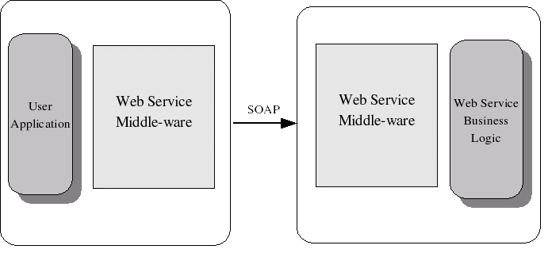
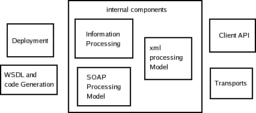
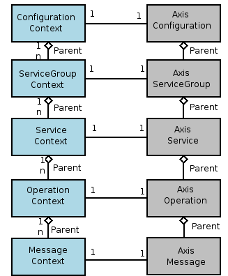
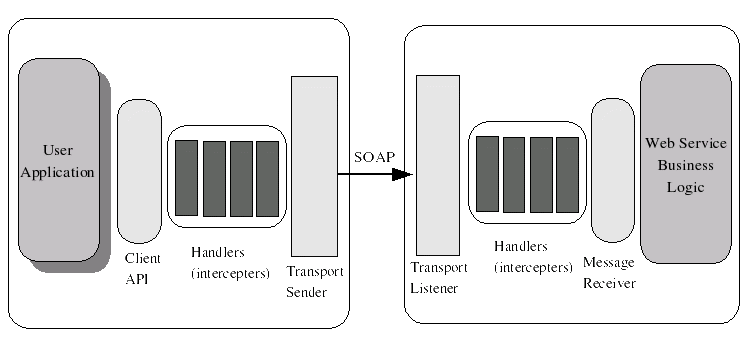
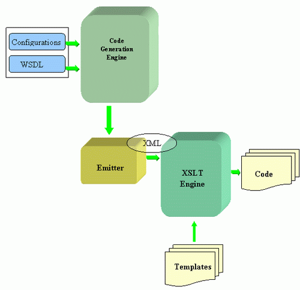
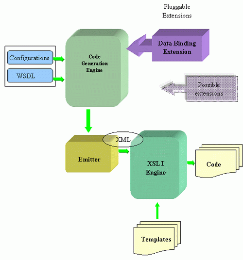

Apache Axis2 Architecture Guide
This document gives an introduction to Axis2's modular architecture with explanations on every module.
Contents
- The Big Picture
- Axis2 Architecture
The Big Picture
A new architecture for Axis was introduced during the August 2004 Summit in Colombo, Sri Lanka. This new architecture on which Axis2 is based is more flexible, efficient, and configurable in comparison to Axis1.x architecture. Some well established concepts from Axis 1.x, like handlers etc., have been preserved in this new architecture.
Any architecture is a result of what that architecture should yield. The success of an architecture should be evaluated based on the requirements expected to be met by that architecture. Let us start our journey into Axis2 by looking at the requirements.
Requirement of Axis2
In SOAP terminology, a participant who is taking part in a Web service interaction is known as a SOAP Node. Delivery of a single SOAP Message is defined based on two participants, SOAP Sender and SOAP Receiver. Each SOAP message is sent by a SOAP Sender and received by a SOAP Receiver. A single SOAP delivery is the most basic unit that builds the Web service interaction.
Each SOAP Node may be written in specific programming language, may it be Java, C++, .NET or Perl, but the Web services allow them to interoperate. This is possible because on the wire each Web service interaction is done via SOAP, which is common to every SOAP Node.

Web service middleware handles the complexity in SOAP messaging and lets the users work with the programming language they are accustomed to. Axis2 allows Java users to invoke Web services using Java representations, and handles the SOAP messaging behind the curtain.
Axis2 handles SOAP processing along with numerous other tasks. This makes life of a Web service developer a whole lot easier. Following are the identified requirements:
- Provide a framework to process the SOAP messages. The framework should be extensible and the users should be able to extend the SOAP processing per service or per operation basis. Furthermore, it should be able to model different Message Exchange Patterns (MEPs) using the processing framework.
- Ability to deploy a Web service (with or without WSDL)
- Provide a Client API that can be used to invoke Web services. This API should support both the Synchronous and Asynchronous programming models.
- Ability to configure Axis2 and its components through deployment.
- Ability to send and receive SOAP messages with different transports.
Apart from the above functionalities, performance in terms of memory and speed is a major consideration for Axis2. Axis2 Core Architecture is built on three specifications- WSDL, SOAP and WS-Addressing. Other specifications like JAX-RPC, SAAJ and WS-Policy are layered on top of the Core Architecture.
Axis2 Architecture
Axis2 architecture lays out some principals to preserve the uniformity. They are as follows:-
Axis2 architecture separates the logic and the states. Code that does the processing does not have a state inside Axis2. This allows code to be executed freely by parallel threads.
- All the information is kept in one information model, allowing the system to be suspended and resumed.
Axis2 architecture is modular. Therefore, Axis2 Framework is built up of core modules that collectively make up the core architecture of Axis2. Non-core/other modules are layered on top of these core modules.
Core Modules:
- Information Model - Axis2 defines a model to handle information and all states are kept in this model. The model consists of a hierarchy of information. The system manages the life cycle of the objects in this hierarchy.
-
XML processing Model - Handling the SOAP Message is the most important and most complex task. The efficiency of this is the single most important factor that decides the performance. It makes sense to delegate this task to a separate sub-project under the Web services project, allowing that sub-project (AXIOM or AXis Object Model) to provide a simple API for SOAP and XML info-set. It hides the complexities of efficient XML processing within its implementation.
- SOAP Processing Model - This controls the execution of the processing. The model defines different phases the execution would walk through, and the user can extend the Processing Model at specific places.
-
Deployment Model - The Axis2 deployment model allows the user to deploy services, configure the transports, and extend the SOAP Processing model per system, service, or operation basis.
- Client API - This provides a convenient API for users to communicate with Web services using Axis2. There are a set of classes to interact with IN-OUT and IN-Only style Message Exchange Patterns (MEPs), where they can be used to construct any other MEP. (Please note that even if the client API has in-built support for the above named MEPs, it does not by any means limit Axis2's flexibility to support custom MEPs.)
-
Transports - Axis2 defines a transport framework that enables the user to use multiple different transports. The transports fit into specific places in the SOAP processing model. The implementation provides a few common transports and the user can write or plug-in new ones if and when it is needed.
Other Modules:
- Code Generation - Axis2 provides a code generation tool that generates server side and client side code along with descriptors and a test case. The generated code simplifies the service deployment and the service invocation, increasing the usability of Axis2.
-
Data Binding - The basic client API of Axis2 lets the users process SOAP at the infoset level, whereas data binding extends it to make it more convenient to users by encapsulating the infoset layer and providing a programming language specific interface.

Information Model
The Information Model has two main hierarchies--Contexts and Descriptions. This model is described in UML notations below.

( A ----<> B says, B has 1 or more objects of A. A------>B says, the given relationship holds between A and B.)
The two hierarchies are connected as shown in the above figure. The Description hierarchy represents the static data. This data may be loaded from a configuration file that exists throughout the lifetime of Axis2. For example, deployed Web services, operations, etc. On the other hand, the context hierarchy holds more dynamic information about objects that can have more than one instance (e.g., Message Contexts).
These two hierarchies create a model that provides the ability to search for key-value pairs. When the values are searched at a given level, they are searched while moving up the hierarchy until a match is found. In the resulting model, the lower levels override the values in the upper levels. For example, when a value is looked up in the Message Context and is not found, it would be looked up in the Operation Context, etc, up the hierarchy. The Search is first done up the hierarchy, and if the starting point is a Context then it searches in the Description hierarchy as well.
This allows the user to declare and override values, with the result being a very flexible configuration model. This flexibility could be the Achilles heel for the system, however, as searches are expensive, especially for parameters that turn out not to exist. Yet in the final analysis, the Axis Team believes that this flexibility serves developers better overall.
XML Processing Model
As mentioned above, the XML processing model of Axis2 has become a separate sub-project, called Apache Axiom, in the Apache Web services project. Please refer to the OM Tutorial for more information.
SOAP Processing Model

The architecture identified two basic actions a SOAP processor should perform, sending and receiving SOAP messages. The architecture provides two pipes (or flows) to perform these two basic actions. The Axis Engine or the driver of Axis2 defines two methods, send() and receive(), to implement these two pipes. The two pipes are named In Pipe and Out Pipe, and complex Message Exchange Patterns (MEPs) are constructed by combining these two pipes.
Extensibility of the SOAP processing model is provided through handlers. When a SOAP message is being processed, the handlers that are registered will be executed. The handlers can be registered in global, service, or operation scope and the final handler chain is calculated combining the handlers from all the scopes.
The handlers act as interceptors and they process parts of the SOAP message and provide add-on services. Usually handlers work on the SOAP headers, yet they may access or change the SOAP body as well.
When a SOAP message is being sent through the Client API, an Out Pipe activates. The Out Pipe will invoke the handlers and end with a Transport Sender that sends the SOAP message to the target endpoint. The SOAP message is received by a Transport Receiver at the target endpoint, which reads the SOAP message and starts the In Pipe. The In Pipe consists of handlers and ends with the Message Receiver, which consumes the SOAP message.
The processing explained above happens for each and every SOAP message that is exchanged. After processing one message, Axis2 may decide to create other SOAP messages, in which case more complex message patterns emerge. However, Axis2 always views the SOAP message in terms of processing a single message. The combination of the messages are layered on top of that basic framework.
The two pipes do not differentiate between the Server and the Client. The SOAP Processing Model handles the complexity and provides two abstract pipes to the user. The different areas or the stages of the pipes are called 'phases' within Axis2. A Handler always runs inside a specific phase, and the phase provides a mechanism to specify the ordering of handlers. Both Pipes have built-in phases, and both define the areas for 'User Phases' which can be defined by the user.
Axis2 Default Processing Model
Axis2 has some inbuilt handlers that run in inbuilt phases and they create the default configuration for Axis2. We will be looking more in to how to extend the default processing Model in the next section.
There are three special handlers defined in Axis2.- Dispatchers - Finds the service and the operation the SOAP message is directed to. Dispatchers always run on the In-Pipe and inside the Dispatch phase. The in-built dispatchers dispatch to a particular operation depending on various conditions like WS-Addressing information, URI information, SOAP action information, etc. ( See more information on Dispatching)
- Message Receiver - Consumes the SOAP message and hands it over to the application. The message receiver is the last handler of the in-pipe
-
Transport Sender - Sends the SOAP message to the SOAP endpoint the message is destined to. Always runs as the last handler in the out-pipe
Processing an Incoming SOAP Message
An incoming SOAP message is always received by a Transport Receiver waiting for the SOAP messages. Once the SOAP message arrives, the transport Headers are parsed and a Message Context is created from the incoming SOAP message. This message context encapsulates all the information, including the SOAP message itself, transport headers, etc., inside it. Then the In Pipe is executed with the Message Context.
Let us see what happens at each phase of the execution. This process can happen in the server or in the client.
- Transport Phase - The handlers are in the phase that processes transport specific information such as validating incoming messages by looking at various transport headers, adding data into message contexts, etc.
- Pre-Dispatch Phase- The main functionality of the handlers in this phase is to populate message context to do the dispatching. For example, processing of addressing headers of the SOAP message, if any, happens in this phase. Addressing handlers extract information and put them in to the message context.
- Dispatch Phase - The Dispatchers run in this
phase and try to find the correct service and operation this
particular message is destined for.
The post condition of the dispatch phase (any phase can contain a post condition) checks whether a service and an operation were found by the dispatchers. If not, the execution will halt and return a "service not found' error. - User Defined Phases - Users can engage their custom handlers here.
- Message Validation Phase - Once the user level execution has taken place, this phase validates whether SOAP Message Processing has taken place correctly.
- Message Processing Phase - The Business logic of the SOAP message is executed here. A Message Receiver is registered with each Operation. This message receiver (associated to the particular operation) will be executed as the last handler of this phase.
There may be other handlers in any of these phases. Users may use custom handlers to override the processing logic in each of these phases.
Processing of the Outgoing Message
The Out Pipe is simpler because the service and the operation to dispatch are known by the time the pipe is executed. The Out Pipe may be initiated by the
Message Receiver or the Client API implementation. Phases of the Out Pipe are described below:- Message Initialize Phase - First phase of the Out Pipe. Serves as the placeholder for the custom handlers.
- User Phases - Executes handlers in user-defined phases.
- Transports Phase - Executes any transport handlers taken from the associated transport configuration. The last handler would be a transport sender which will send the SOAP message to the target endpoint.
Extending the SOAP Processing Model
Above, we discussed the default processing model of Axis2. Now let us discuss the extension mechanism for the SOAP processing model. After all, the whole effort of making this SOAP engine/processing model was focused on making it extendable.
The idea behind introducing step-wise processing of the SOAP message in terms of handlers and phases is to allow easier modification of the processing order. The notion of phases makes it easier to place handlers in between other handlers. This enables modification of the default processing behavior. The SOAP Processing Model can be extended with handlers or modules.
Extending the SOAP Processing Model with Handlers
The handlers in a module can specify the phase they need to be placed in. Furthermore, they can specify their location inside a phase by providing phase rules. Phase rules will place a handler,
- as the first handler in a phase,
- as the last handler in a phase,
- before a given handler,
- or after a given handler.
Extending the SOAP Processing Model with Modules
Axis2 defines an entity called a 'module' that can introduce handlers and Web service operations. A Module in terms of Axis2 usually acts as a convenient packaging that includes:
- A set of handlers and
- An associated descriptor which includes the phase rules
Modules have the concept of being 'available' and 'engaged'. 'Availability' means the module is present in the system, but has not been activated, i.e., the handlers included inside the module have not been used in the processing mechanism. When a module is 'engaged' it becomes active and the handlers get placed in the proper phases. The handlers will act in the same way as explained in the previous section. Usually a module will be used to implement a WS-* functionality such as WS-Addressing.
Apart from the extension mechanism based on the handlers, the WS-* specifications may suggest a requirement for adding new operations. For example, once a user adds Reliable Messaging capability to a service, the "Create Sequence" operation needs to be available to the service endpoint. This can be implemented by letting the modules define the operations. Once the module is engaged to a service, the necessary operations will be added to that service.
A service, operation, or the system may engage a module. Once the module is engaged, the handlers and the operations defined in the module are added to the entity that engaged them.
Modules cannot be added (no hot deployment) while the Axis2 engine is running, but they will be available once the system is restarted.
Deployment
The Deployment Model provides a concrete mechanism to configure Axis2. This model has three entities that provide the configuration.
The axis2.xml file
This file holds the global configuration for the client and server, and provides the following information:
- The global parameters
- Registered transport-in and transport-outs
- User-defined phase names
- Modules that are engaged globally (to all services)
- Globally defined Message Receivers
Service Archive
The Service archive must have a META-INF/services.xml file and may contain the dependent classes. Please see modules/kernel/resources/services.xsd in the source distribution for the schema for services.xml. The services.xml file has the following information.
- Service level parameters
- Modules that are engaged at service level
- Service Specific Message Receivers
- Operations inside the service
Module Archive
Module archive must have a META-INF/module.xml file and dependent classes. The module.xml file has Module parameters and the Operations defined in the module.
When the system starts up, Axis2 prompts the deployment model to create an Axis Configuration. The deployment model first finds the axis2.xml file and builds the global configuration. Then it checks for the module archives and then for the service archives. After that, the corresponding services and modules are added to the Axis Configuration. The system will build contexts on top of the Axis Configuration. After this, Axis2 is ready to send or receive SOAP messages. Hot deployment is only allowed for services.
Client API
There are three parameters that decide the nature of the Web service interaction.
- Message Exchange Pattern (MEP)
- The behavior of the transport, whether it's One-Way or Two-Way
- Synchronous/Asynchronous behavior of the Client API
Variations of the three parameters can result in an indefinite number of scenarios. Even though Axis2 is built on a core that supports any messaging interaction, the developers were compelled to provide built-in support for only the two most widely used Message Exchange Patterns (MEPs).
The two supported MEPs are One-Way and the In-Out
(Request-Response) scenarios in the Client API. The implementation
is based on a class called ServiceClient and there are
extensions for each MEP that Axis2 Client API supports.
One Way Messaging Support
The One-Way support is provided by the
fireAndForget method of ServiceClient.
For one way invocations, one can use HTTP, SMTP and TCP transports.
In the case of the HTTP transport, the return channel is not used,
and the HTTP 202 OK is returned in the return channel.
In-Out (Request Response) Messaging Support
The In-Out support is provided by the sendReceive()
method in ServiceClient. This provides a simpler interface for the
user. The Client API has four ways to configure a given message
exchange
- Blocking or Non-Blocking nature - this can be decided by using
sendReceive()orsendReceiveNonBlocking()methods - Sender transport - transport that sends the SOAP message
- Listener transport - transport that receives the response
- Use Separate Channel - determines whether the response is sent over a separate transport connection or not. This can be false only when the sender and listener transport is same and is a Two-Way transport.
Depending on the values of the above four parameters, Axis2 behaves differently.
Transports
Axis2 has two basic constructs for transports, namely: Transport Senders and Transport Receivers. These are accessed via the AxisConfiguration.
The incoming transport is the transport via which the AxisEngine receives the message. The outgoing transport is decided based on the addressing information (wsa:ReplyTo and wsa:FaultTo). If addressing information is not available and if the server is trying to respond, then the out going transport will be the output stream of the incoming transport (if it is two-way transport).
At the client side, the user is free to specify the transport to be used.
Transport Senders and Transport Receivers contain the following information.
- Transport Sender for Out Configuration
- Transport Listener for In Configuration
- Parameters of the transport
Each and every transport out configuration defines a transport sender. The transport sender sends the SOAP message depending on its configuration.
The transport receiver waits for the SOAP messages, and for each SOAP message that arrives, it uses the In Pipe to process the SOAP message.
Axis2 presently supports the following transports:
- HTTP - In HTTP transport, the transport listener is a servlet or org.apache.axis2.transport.http.SimpleHTTPServer provided by Axis2. The transport sender uses apache httpcomponents to connect and send the SOAP message.
- Local - This transport can be used for in-VM communication.
- Transports for TCP, SMTP, JMS and other protocols are available from the WS-Commons Transport project.
Code Generation
Although the basic objective of the code generation tools has not changed, the code generation module of Axis2 has taken a different approach to generate code. Primarily, the change is in the use of templates, namely XSL templates, which gives the code generator the flexibility to generate code in multiple languages.
The basic approach is to set the code generator to generate an XML, and parse it with a template to generate the code file. The following figure describes how this shows up in the architecture of the tool.

The fact here is that it is the same information that is extracted from the WSDL no matter what output code is generated. First, an AxisService is populated from a WSDL. Then the code generator extracts information from the AxisService and creates an XML, which is language independent. This emitted XML is then parsed with the relevant XSL to generate code in the desired output language. No matter what the output language is, the process is the same except for the XSL template that is used.
Data Binding
Integration with the Code Generation Engine
Databinding for Axis2 is implemented in an interesting manner. Databinding has not been included in the core deliberately, and hence the code generation allows different data binding frameworks to be plugged in. This is done through an extension mechanism where the codegen engine first calls the extensions and then executes the core emitter. The extensions populate a map of QNames vs. class names that is passed to the code generator on which the emitter operates on.
The following diagram shows the structure:

The following databinding extensions are available:
- ADB - ADB (Axis Data Binding ) is a simple framework that allows simple schemas to be compiled. It is lightweight and simple, works off StAX and fairly performant. However, it does not support the complete set of schema constructs and is likely to complain for certain schemas!
- XMLBeans - XMLbeans claims that it supports the complete schema specification, and it is preferred if full schema support is needed!
- JAXB-RI - JAXB2 support has been added in a similar manner to XMLbeans and serves as another option for the user
- JibX - This is the most recent addition to the family of databinding extensions, and it is also another option users have for data binding.
Serialization and De-Serialization of Data bound classes
AXIOM is based on the StAX API (Streaming API for XML). Xml-beans also supports this API. Data binding in Axis2 is achieved through interfacing the AXIOM with the Xml-beans using the StAX API. At the time of code generation, there will be utility methods generated inside the stub (or the message receiver) that can de-serialize from AXIOM to a data bound object and serialize from a data bound object to AXIOM. For example, if the WSDL has an operation called "echoString", once the code is generated, the following methods will be generated inside the relevant classes.
public static org.apache.axiom.om.OMElement toOM(org.soapinterop.xsd.EchoStringParamDocument param)// This method will handle the serialization. public static org.apache.xmlbeans.XmlObject fromOM(org.apache.axis2.om.OMElement param, java.lang.Class type) //This method will handle the de-serialization.